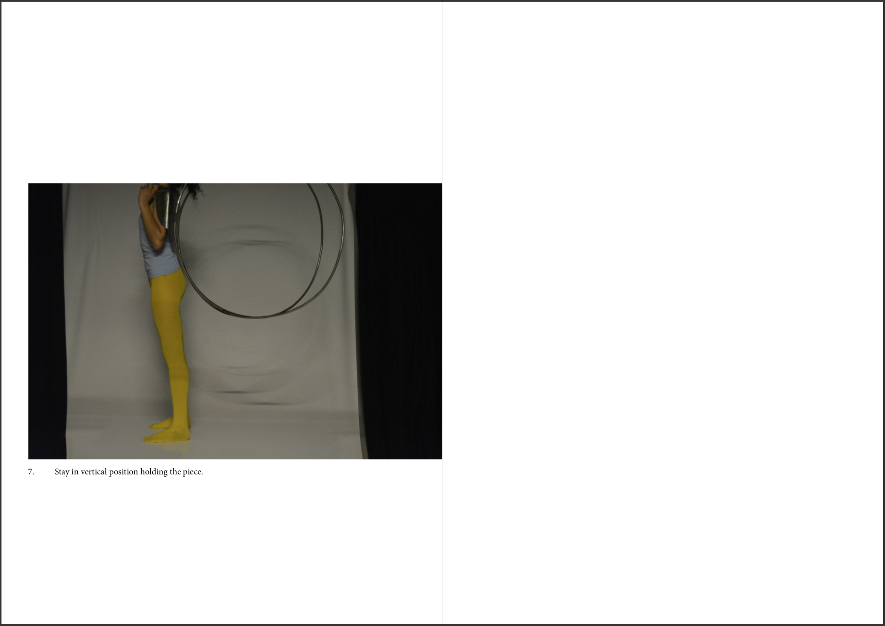

Chapa de aço polido repuxada e tubos de aço calandrados, impressão a jato de tinta em papel A4 dobrado ao meio e agrafado
Dimensões variáveis (máximo 1m)
Sinopse:
A performer constrói o objeto performativo. Posteriormente, encaixa-se nele, baloiçando, e realizando outras ações.
É disponibilizado ao espetador um livro de instruções para que possa utilizar o objeto performativo.
Hammered technique on polished steel plate and twisted steel tubes, inkjet print on A4 papel folded in half and stapled.
Variable dimensions (1cm).
Synopsis:
The performer builds the performative object. Posteriorly, she fits herself in it, swinging and performing other actions.
The spectator is given an instructions manual to use the performative object.

selected pages from the book INSTRUCTION MANUAL-Follow my Back
28 pages, 1/1
2019
Em Follow my back, partindo do título que contempla em si uma ordem, que pode (ou não) ser seguida, a performer fotografa-se a si mesma, interagindo com a peça que construiu, batendo com um martelo, repetidamente, durante meses, até a chapa de metal se moldar e encaixar nos seus ombros, pescoço e costas.
Em todo o sueste da Ásia, o baloiço é associado aos ritos da fertilidade e da fecundidade, devido ao seu movimento de alternância, que a terminologia chinesa identificaria como yin e yang. Nalgumas regiões da Índia, o uso do baloiço era interdito fora do campo ritual; era reservado às comunicações entre a terra e o céu, e mais particularmente à manifestação da palavra divina.
De equilíbrio sensível, com os pés assentes no chão, o olhar virado para o céu e o corpo apoiado em dois círculos, o objeto performativo é apresentado com um manual de instruções de como utilizar a peça. A peça e o manual de instruções são disponibilizados ao espetador, podendo utilizá-los, seguindo-os, ou não, estando sempre restringido pelas medidas do corpo da performer.
Os projetos Untitled e Follow my back foram instalados no mesmo espaço. Um espaço pequeno, íntimo, apesar de claustrofóbico, cujas paredes continham em si um padrão de varões de ferro, alinhados, esquematizados, e direcionados para o espetador